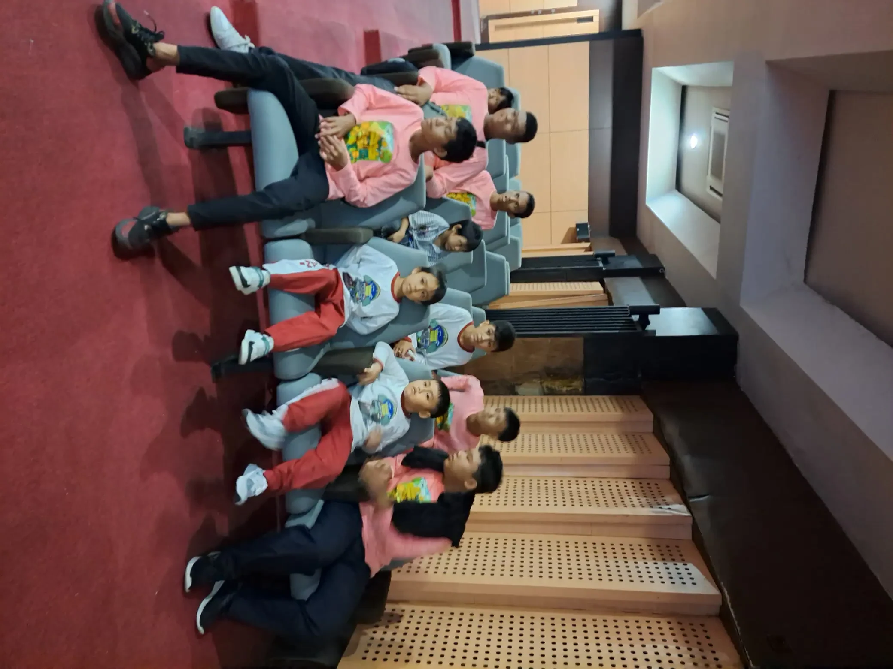

Disabilitas tuna rungu adalah kondisi hilang atau berkurangnya fungsi pendengaran, dan dalam UU No. 8 Tahun 2016 tentang Penyandang Disabilitas kondisi ini termasuk ragam disabilitas sensorik. Artinya tuna rungu bukan sekadar label medis, melainkan status hukum yang membawa serangkaian hak: pendidikan, pekerjaan, aksesibilitas, sampai fasilitas bahasa isyarat dalam interaksi resmi. Anak maupun orang dewasa dengan disabilitas rungu bisa bersekolah, bekerja, dan berkarya sepenuhnya selama lingkungan menyediakan akses komunikasi yang mereka butuhkan. Yang paling sering menghambat justru bukan kondisi telinganya, melainkan kelas tanpa juru bahasa isyarat, layanan publik tanpa teks, dan anggapan bahwa mereka tidak bisa apa-apa. Panduan ini membahas dasar hukumnya, istilah yang tepat, hak yang bisa dituntut, serta langkah nyata bagi keluarga dan masyarakat.
Apa Itu Disabilitas Tuna Rungu?
Tuna rungu merujuk pada kondisi hilang atau berkurangnya kemampuan mendengar, mulai dari derajat ringan sampai sangat berat. Karena rentangnya lebar, dua orang dengan label yang sama bisa punya kebutuhan komunikasi yang sangat berbeda.
Secara medis, gangguan pendengaran dikelompokkan menjadi tiga jenis:
- Konduktif, ketika suara terhambat di telinga luar atau telinga tengah, misalnya karena serumen, cairan, atau kelainan tulang pendengaran. Sebagian penyebabnya bisa ditangani.
- Sensorineural, ketika gangguan terjadi di rumah siput (koklea) atau saraf pendengaran. Jenis ini umumnya menetap.
- Campuran, gabungan keduanya.
Waktu munculnya juga menentukan. Anak yang mengalami gangguan pendengaran sebelum menguasai bahasa menghadapi tantangan berbeda dibanding orang yang kehilangan pendengaran setelah dewasa. Bandingkan dengan ragam sensorik lain di disabilitas sensorik dan tuna rungu adalah.
WHO mencatat sekitar 95,1 juta anak usia 5 sampai 19 tahun di dunia hidup dengan gangguan pendengaran (WHO, Deafness and hearing loss). Di Amerika Serikat, NIDCD memperkirakan 2 sampai 3 dari setiap 1.000 bayi lahir dengan gangguan pendengaran yang terdeteksi pada satu atau kedua telinga. Ini jelas bukan kondisi langka.

Tuna Rungu dalam UU No. 8 Tahun 2016
Undang-Undang Nomor 8 Tahun 2016 tentang Penyandang Disabilitas adalah rujukan hukum utama di Indonesia. Pasal 4 menyebutkan ragam penyandang disabilitas meliputi disabilitas fisik, intelektual, mental, dan/atau sensorik. Disabilitas rungu berada dalam kelompok terakhir, bersama disabilitas netra dan wicara.
Pasal yang sama menegaskan ragam disabilitas dapat dialami secara tunggal, ganda, atau multi. Seorang anak bisa mengalami disabilitas rungu sekaligus disabilitas intelektual, dan dukungannya harus dirancang untuk keduanya, bukan salah satu saja.
Kenapa status hukum ini penting? Begitu seseorang diakui sebagai penyandang disabilitas, seluruh daftar hak dalam Pasal 5 melekat padanya: hak hidup, bebas dari stigma, pendidikan, pekerjaan, kesehatan, aksesibilitas, pelayanan publik, konsesi, sampai hak hidup secara mandiri dan dilibatkan dalam masyarakat.
Ini pergeseran besar dari cara pandang lama yang menempatkan penyandang disabilitas sebagai objek belas kasihan. Baca juga penyandang disabilitas dan golongan disabilitas apa saja.
Istilah yang Tepat: Tuli, Tuna Rungu, dan Sebutan yang Keliru
Bahasa yang kita pakai membentuk cara kita memperlakukan orang, dan tidak semua istilah setara.
- Tuli, sering ditulis dengan huruf T besar, dipakai banyak anggota komunitas Tuli Indonesia sebagai penanda identitas budaya dan bahasa. Mereka memakai bahasa isyarat sebagai bahasa pertama dan tidak melihat dirinya sebagai orang yang perlu diperbaiki.
- Tuna rungu dipakai luas dalam dokumen resmi, sekolah, dan layanan kesehatan. Istilah ini netral secara administratif, meski sebagian komunitas menilainya terlalu berfokus pada kekurangan.
- Penyandang disabilitas rungu selaras dengan UU No. 8 Tahun 2016 dan aman dipakai untuk konteks formal.
Sebutan yang Sebaiknya Ditinggalkan
Sebutan "tuli bisu" keliru sekaligus menyakitkan. Tidak mendengar tidak otomatis berarti tidak bisa berbicara. Banyak orang Tuli memakai suara, sebagian memilih bahasa isyarat, sebagian lagi memakai keduanya bergantian sesuai lawan bicara. Menggabungkan dua kondisi berbeda menjadi satu label membuat seseorang tampak jauh lebih terbatas daripada kenyataannya.
Sebutan "penderita" dan "korban" juga sebaiknya ditinggalkan. Kalau ragu, tanyakan langsung sebutan yang ia sukai lalu pakai secara konsisten. Perbedaan difabel dan disabilitas kami bahas di difabel adalah.
Model Medis dan Model Sosial Disabilitas
Ada dua cara pandang besar terhadap disabilitas, dan keduanya melahirkan solusi yang berbeda.
Model medis meletakkan masalah pada tubuh individu. Fokusnya perbaikan lewat alat bantu dengar, implan koklea, dan terapi wicara. Pendekatan ini berguna dan sering sangat membantu. Persoalannya muncul kalau ia berdiri sendiri, karena secara tersirat mensyaratkan seseorang diperbaiki dulu sebelum layak diterima.
Model sosial meletakkan masalah pada lingkungan. Anak Tuli yang cerdas tetap tertinggal bukan karena telinganya, melainkan karena guru mengajar hanya dengan suara, video pembelajaran tanpa teks, dan pengumuman sekolah hanya lewat pengeras suara. Ubah lingkungannya, hambatan itu berkurang drastis.
WHO memakai kerangka yang menekankan interaksi antara kondisi kesehatan seseorang dengan faktor lingkungan di sekitarnya (WHO, Disability). Dalam praktik sehari-hari, keluarga tidak perlu memilih satu kubu. Alat bantu dengar boleh dipakai, bahasa isyarat tetap diajarkan, dan sekolah tetap wajib menyesuaikan diri. Yang berbahaya adalah menunda akses bahasa anak sambil menunggu satu solusi medis berhasil.
Deteksi Dini: Semakin Cepat Semakin Baik
Kemampuan bahasa berkembang paling pesat pada tahun-tahun pertama. Kalau gangguan pendengaran baru ditemukan terlambat, anak kehilangan jendela waktu berharga untuk membangun bahasa, baik lisan maupun isyarat.
NIDCD menjelaskan skrining pendengaran bayi baru lahir umumnya dilakukan sebelum bayi pulang dari rumah sakit, dan bila hasilnya perlu ditindaklanjuti, pemeriksaan lanjutan sebaiknya segera dijadwalkan (NIDCD, Your Baby's Hearing Screening and Next Steps). Di Indonesia, kamu bisa meminta pemeriksaan ke dokter anak, dokter THT, atau audiolog.
Tanda yang perlu diperhatikan orang tua:
- Bayi tidak bereaksi terhadap suara keras yang mendadak.
- Bayi belum menoleh ke arah sumber suara pada usia sekitar enam bulan.
- Anak belum mengucapkan kata sederhana pada usia satu tahun, atau celotehnya berhenti berkembang.
- Anak sering meminta televisi dikeraskan, atau tidak menyahut ketika dipanggil dari arah belakang.
- Anak lebih mengandalkan gerak bibir dan ekspresi wajah lawan bicara daripada suara.
ASHA menjelaskan gangguan pendengaran yang tidak ditangani dapat memengaruhi perkembangan bahasa, capaian akademik, dan kehidupan sosial anak (ASHA, How Hearing Loss Affects a Child's Development). Jangan menunggu dengan alasan nanti juga bisa sendiri. Bacaan lanjutan: intervensi dini dan speech delay adalah.
Hak atas Pendidikan: Sekolah Inklusi dan SLB-B
Pasal 10 UU No. 8 Tahun 2016 menyebut hak pendidikan meliputi hak mendapatkan pendidikan bermutu pada satuan pendidikan di semua jenis, jalur, dan jenjang secara inklusif dan khusus, serta hak mendapatkan akomodasi yang layak sebagai peserta didik.
Pasal 40 mewajibkan Pemerintah dan Pemerintah Daerah menyelenggarakan atau memfasilitasi pendidikan untuk penyandang disabilitas di setiap jalur, jenis, dan jenjang, serta mengikutsertakan anak penyandang disabilitas dalam program wajib belajar 12 tahun. Menolak siswa dengan disabilitas rungu tanpa alasan yang sah bertentangan dengan undang-undang.
Sekolah Inklusi atau SLB-B?
Keduanya sah dan diakui undang-undang. Yang membedakan adalah kebutuhan anak dan kesiapan sekolahnya.
| Aspek | Sekolah inklusi | SLB-B |
|---|---|---|
| Teman sebaya | Bercampur dengan anak non-disabilitas | Sesama anak dengan disabilitas rungu |
| Dukungan komunikasi | Bergantung pada ketersediaan guru pembimbing khusus | Guru terlatih dan lingkungan berbahasa isyarat |
| Kurikulum | Kurikulum umum dengan modifikasi | Kurikulum khusus, menekankan komunikasi |
| Risiko utama | Anak terisolasi bila akomodasi tidak nyata | Ruang berbaur dengan lingkungan umum lebih sempit |
Banyak keluarga memilih jalur campuran: memulai di SLB-B untuk membangun fondasi bahasa isyarat, lalu pindah ke sekolah inklusi. Kunci keputusannya bukan gengsi, melainkan tempat mana yang membuat anak paling banyak mengakses informasi. Pelajari di pendidikan inklusi, SLB adalah, dan sekolah SLB untuk anak apa.
Hak Aksesibilitas dan Juru Bahasa Isyarat
Pasal 24 UU No. 8 Tahun 2016 mengatur hak berekspresi, berkomunikasi, dan memperoleh informasi, termasuk hak menggunakan dan memperoleh fasilitas informasi dan komunikasi berupa bahasa isyarat, braille, dan komunikasi augmentatif dalam interaksi resmi.
Frasa "dalam interaksi resmi" itu penting. Ketika penyandang disabilitas rungu berurusan dengan pengadilan, rumah sakit, kantor kelurahan, atau sekolah negeri, penyediaan akses bahasa isyarat bukan kebaikan hati petugas, melainkan pemenuhan hak.
Undang-undang juga menyentuh ranah lain. Pasal 82 meminta pemerintah mengupayakan ketersediaan penerjemah bahasa isyarat dalam kegiatan peribadatan, Pasal 85 mengatur pemandu wisata yang mampu memandu wisatawan penyandang disabilitas rungu dengan bahasa isyarat, dan Pasal 37 mewajibkan rumah tahanan serta lembaga pemasyarakatan menyediakan Unit Layanan Disabilitas.
Bentuk aksesibilitas lain yang murah tetapi berdampak besar:
- Takarir atau teks pada video, siaran, dan materi pembelajaran.
- Lampu indikator sebagai pendamping bel, sirene, dan alarm kebakaran.
- Papan informasi tertulis serta nomor antrean visual di loket layanan, bukan hanya panggilan suara.
- Petugas yang bersedia menulis di kertas atau layar ponsel ketika komunikasi macet.
Tidak satu pun dari daftar itu memerlukan anggaran besar.
BISINDO dan SIBI: Dua Sistem Isyarat di Indonesia
Di Indonesia ada dua sistem isyarat yang sering dibandingkan, dan keduanya lahir dari logika yang berbeda.
BISINDO (Bahasa Isyarat Indonesia) tumbuh secara alami di dalam komunitas Tuli. Ia punya tata bahasa sendiri yang tidak mengikuti susunan kata bahasa Indonesia lisan, memakai ekspresi wajah dan arah pandang sebagai bagian dari tata bahasa, serta punya variasi antardaerah. Komunitas Tuli, termasuk Gerkatin sebagai organisasi Tuli tingkat nasional, mendorong pemakaian BISINDO karena inilah bahasa yang benar-benar mereka pakai sehari-hari.
SIBI (Sistem Isyarat Bahasa Indonesia) adalah sistem baku yang disusun mengikuti struktur bahasa Indonesia kata demi kata, termasuk imbuhan, dan dipakai secara resmi di banyak sekolah luar biasa. Karena mengikuti bahasa lisan, sebagian pengguna merasa SIBI lambat untuk percakapan cepat, meski berguna untuk mengajarkan struktur bahasa tulis.
Untuk keluarga, pelajari sistem yang dipakai anak di sekolah, lalu tetap belajar BISINDO supaya anak terhubung dengan komunitas Tuli yang lebih luas. Perlu diingat, bahasa isyarat bukan bahasa universal. American Sign Language, misalnya, punya tata bahasa yang berbeda dari bahasa Inggris (NIDCD, American Sign Language). Mulailah dari bahasa isyarat dan BISINDO adalah.
Akomodasi yang Layak di Sekolah dan Tempat Kerja
UU No. 8 Tahun 2016 mendefinisikan akomodasi yang layak sebagai modifikasi dan penyesuaian yang tepat dan diperlukan untuk menjamin penikmatan atau pelaksanaan semua hak asasi manusia dan kebebasan fundamental bagi penyandang disabilitas berdasarkan kesetaraan. Intinya, aturan boleh disesuaikan supaya hasil akhirnya adil.
Di sekolah, akomodasi untuk siswa dengan disabilitas rungu bisa berupa:
- Tempat duduk depan dengan pandangan bebas ke wajah guru dan papan tulis.
- Guru berbicara menghadap kelas, tidak sambil menulis di papan atau menutupi mulut.
- Catatan tertulis, salinan slide, atau teman pencatat yang ditunjuk.
- Video pembelajaran bertakarir, dan instruksi penting yang dituliskan, bukan hanya diucapkan sekali.
- Format ujian yang disesuaikan, misalnya soal lisan diganti tertulis atau diberi tambahan waktu.
- Pendampingan guru pembimbing khusus atau shadow teacher sesuai kebutuhan.
Di tempat kerja, Pasal 11 menjamin hak memperoleh akomodasi yang layak dalam pekerjaan, upah setara untuk pekerjaan yang sama, dan hak tidak diberhentikan karena alasan disabilitas. Pasal 53 mewajibkan Pemerintah, Pemerintah Daerah, BUMN, dan BUMD mempekerjakan paling sedikit 2% penyandang disabilitas dari jumlah pegawai, sementara perusahaan swasta paling sedikit 1%. Akomodasi di kantor sering murah: agenda rapat tertulis, notulen langsung di layar bersama, pesan teks sebagai kanal utama, dan alarm kebakaran berlampu.
Kartu Penyandang Disabilitas dan Layanan Pemerintah
Pasal 22 UU No. 8 Tahun 2016 menyebut hak pendataan, yang meliputi hak didata sebagai penduduk dengan disabilitas, hak mendapatkan dokumen kependudukan, serta hak mendapatkan kartu penyandang disabilitas.
Pasal 121 melengkapinya. Penyandang disabilitas yang sudah tercatat dalam data nasional penyandang disabilitas berhak mendapatkan kartu penyandang disabilitas, dan kartu tersebut dikeluarkan oleh kementerian yang menyelenggarakan urusan pemerintahan di bidang sosial.
Secara praktis, mulailah dari dinas sosial kabupaten atau kota. Siapkan kartu keluarga, KTP atau akta kelahiran, dan surat keterangan tenaga medis mengenai kondisi disabilitas. Karena prosedur teknis dan sistem pendataan bisa berubah, tanyakan persyaratan terbaru langsung ke petugas setempat, jangan mengandalkan kabar berantai di media sosial.
Tanyakan juga saat datang ke dinas sosial: program bantuan alat bantu dengar, layanan rehabilitasi sosial, pendampingan akses jaminan kesehatan, serta pelatihan kerja dan pendampingan wirausaha untuk penyandang disabilitas.
Perlu dicatat, kartu bukan syarat untuk memperoleh hak. Hak atas pendidikan dan akomodasi yang layak melekat pada orangnya sejak awal. Kartu hanya mempermudah verifikasi ketika mengakses program dan konsesi tertentu.
Peran Keluarga dalam Pendampingan Sehari-hari
Rumah adalah tempat bahasa pertama kali tumbuh. Anak dengan disabilitas rungu berkembang paling baik ketika seluruh keluarga ikut belajar berkomunikasi, bukan ketika hanya anak yang dituntut menyesuaikan diri.
- Belajar bahasa isyarat bersama-sama. Kalau hanya anak yang belajar, ia tetap kesepian di rumahnya sendiri. Ajak kakak, adik, dan kakek nenek ikut serta.
- Pastikan wajahmu terlihat saat bicara. Sejajarkan tinggi badan, hindari bicara dari ruangan lain, dan kecilkan sumber suara yang mengganggu.
- Bicara dengan wajar. Berteriak atau melebih-lebihkan gerak bibir justru membuat kata semakin sulit dibaca.
- Rawat alat bantu dengar. Periksa baterai dan kebersihannya setiap hari, karena alat yang mati seharian sama saja dengan tidak ada.
- Bangun kosakata lewat pengalaman nyata. Memasak, berbelanja, dan berkunjung ke museum memberi konteks yang membuat kata mudah diingat.
- Temui orang dewasa Tuli yang mandiri. Mereka memberi peta jalan yang tidak bisa diberikan buku mana pun.
Jangan lupakan dukungan untuk orang tua sendiri, karena kelelahan dan rasa bersalah itu nyata. Baca peran orang tua dalam pendidikan inklusi dan memilih yayasan anak berkebutuhan khusus.
Cara Masyarakat Bersikap Inklusif
Sikap masyarakat kerap menjadi hambatan terbesar, sekaligus bagian yang paling cepat bisa diperbaiki karena tidak butuh anggaran.
- Sapa dan bicara langsung kepada orangnya, bukan kepada pendamping atau juru bahasa isyarat.
- Tepuk bahu pelan atau lambaikan tangan untuk menarik perhatian, jangan berteriak dari kejauhan.
- Jaga kontak mata dan pastikan cahaya menerangi wajahmu, bukan datang dari belakang punggungmu.
- Kalau tidak paham, minta diulang dengan sopan atau beralih ke tulisan, jangan berpura-pura mengerti lalu mengangguk.
- Jangan menahan informasi dengan alasan "nanti saja, susah menjelaskannya". Itu bentuk pengucilan yang paling sering tidak disadari.
- Kalau kamu mengelola acara atau kanal media, sediakan takarir dan juru bahasa isyarat sejak tahap perencanaan.
Inklusi bukan proyek sesaat menjelang hari peringatan. Ia terbangun dari kebiasaan kecil yang diulang setiap hari. Baca juga inklusi sosial dan pengertian ABK.
Pertanyaan yang Sering Diajukan
Apa perbedaan istilah tuli dan tuna rungu?
Keduanya merujuk pada kondisi yang sama dengan sudut pandang berbeda. Tuli dengan huruf T besar dipakai komunitas Tuli sebagai identitas budaya dan bahasa, sedangkan tuna rungu lebih banyak dipakai dalam dokumen resmi dan layanan kesehatan. Cara paling aman adalah menanyakan sebutan yang disukai orang tersebut lalu memakainya konsisten.
Apakah semua penyandang disabilitas rungu tidak bisa bicara?
Tidak. Tidak mendengar tidak otomatis berarti tidak bisa berbicara. Banyak orang dengan disabilitas rungu memakai suara, apalagi bila pernah mendengar sebelum menguasai bahasa atau menjalani terapi wicara. Karena itu sebutan "tuli bisu" keliru. Lihat juga tuna wicara adalah.
Anak tuna rungu sebaiknya masuk sekolah inklusi atau SLB-B?
Keduanya diakui UU No. 8 Tahun 2016 dan tidak ada yang otomatis lebih baik. Pertimbangkan seberapa besar akses informasi yang benar-benar didapat anak di setiap pilihan. Sekolah inklusi cocok bila akomodasinya nyata, sedangkan SLB-B unggul pada lingkungan berbahasa isyarat dan guru terlatih.
Bagaimana cara mengurus kartu penyandang disabilitas?
Mulailah dari dinas sosial kabupaten atau kota untuk pendataan, karena Pasal 121 UU No. 8 Tahun 2016 menyebut kartu ini diterbitkan oleh kementerian yang mengurus bidang sosial berdasarkan data nasional penyandang disabilitas. Siapkan kartu keluarga, KTP atau akta kelahiran, dan surat keterangan tenaga medis. Persyaratan teknis bisa berbeda antardaerah, jadi konfirmasi langsung ke petugas setempat.
Apakah bahasa isyarat sama di seluruh dunia?
Tidak. Setiap negara umumnya punya bahasa isyaratnya sendiri dengan tata bahasa yang berdiri sendiri, bukan sekadar terjemahan bahasa lisan setempat. NIDCD menjelaskan American Sign Language memiliki tata bahasa yang berbeda dari bahasa Inggris. Di Indonesia sendiri ada BISINDO dan SIBI.
Kapan pendengaran anak sebaiknya diperiksa?
Sedini mungkin, idealnya lewat skrining pada masa bayi baru lahir, dan segera ditindaklanjuti bila hasilnya memerlukan pemeriksaan lanjutan. Di luar itu, periksakan kapan saja bila anak tidak menoleh ke sumber suara, belum berbicara pada usia satu tahun, atau tidak menyahut ketika dipanggil dari belakang.
Apakah penyandang disabilitas rungu boleh bekerja di perusahaan umum?
Tentu boleh, dan undang-undang justru mendorongnya. Pasal 53 UU No. 8 Tahun 2016 mewajibkan Pemerintah, Pemerintah Daerah, BUMN, dan BUMD mempekerjakan paling sedikit 2% penyandang disabilitas dari jumlah pegawai, sedangkan perusahaan swasta paling sedikit 1%. Pasal 11 juga menjamin hak atas akomodasi yang layak dalam pekerjaan.
Sumber Resmi dan Referensi
Artikel ini menggunakan sumber publik yang mendukung informasi kesehatan dan pendidikan:
- Kementerian Sekretariat Negara RI: UU No. 8 Tahun 2016 Tentang Penyandang Disabilitas
- JDIH BPK RI: UU No. 8 Tahun 2016 tentang Penyandang Disabilitas
- World Health Organization: Deafness and hearing loss
- World Health Organization: Disability
- NIDCD (National Institutes of Health): Your Baby's Hearing Screening and Next Steps
- NIDCD (National Institutes of Health): American Sign Language
- ASHA: How Hearing Loss Affects a Child's Development
- NHS UK: Hearing loss
Disclaimer Medis dan Pendidikan: Artikel ini bersifat edukasi umum dan bukan pengganti diagnosis, terapi, atau konsultasi profesional. Untuk keputusan kesehatan anak, konsultasikan dengan dokter atau tenaga profesional yang berwenang.